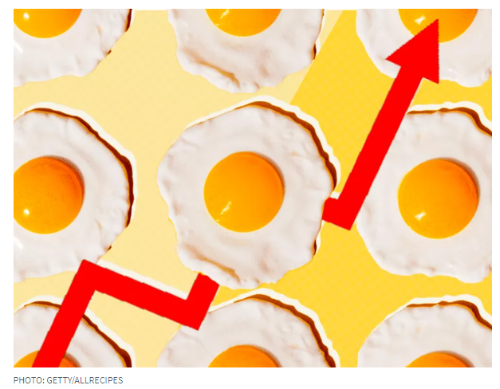
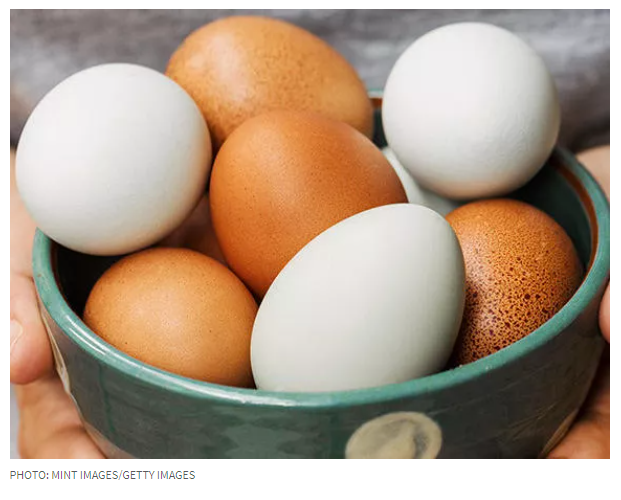

Here are the reasons why.
By Susan B. Barnes | Updated on February 21, 2024
While grocery shopping the other day, I picked up a dozen store-brand extra-large eggs and was surprised to see the price hovering around $4. Could it be déjà vu? After all, two years ago, we experienced higher prices due to supply chain issues and the bird flu, and around the same time last year, supply chain issues came into play again. As the months rolled on last year, we saw egg prices drop, and though still higher than pre-pandemic prices, the cost of a dozen eggs was somewhat palatable.
Thinking my memory was playing tricks on me, I checked the U.S. Bureau of Labor Statistics' Consumer Price Index. I found that egg prices were 28.6% lower in January 2024 than in January 2023 but still 9.7% higher than in October 2023. The Federal Reserve Bank of St. Louis reports that the national average cost of a dozen grade A large eggs in January 2024 rang up at $2.52, thankfully a far cry from the average of $4.82 in January 2023.
As a consumer, though, I had to wonder. When will the price of eggs level out, or are fluctuating prices the new normal? And why is this happening? Spoiler alert: bird flu is cited as a culprit once again. We turned to the American Egg Board for more context.
“It’s important to know that egg farmers do not set the price for their eggs; eggs are sold as wholesale commodities and wholesale egg prices are set by the market,” Marc Dresner with the American Egg Board tells Allrecipes.
“Supply has been a little tighter than normal, due in part to bird flu cases that impacted farms late last year and earlier this year,” Dresner continues. “Additionally, retail sales of eggs have been consistently strong, as eggs are always popular for their nutritional benefits, versatility and convenience. This combination of a tighter-than-normal egg supply and high demand is driving some market pricing pressure that is reflected at the shelf.”